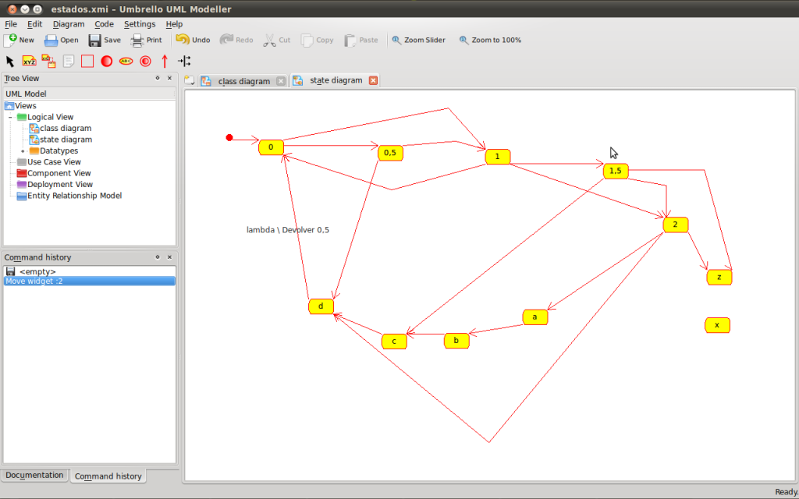
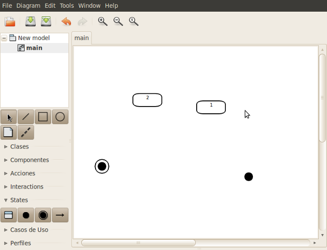
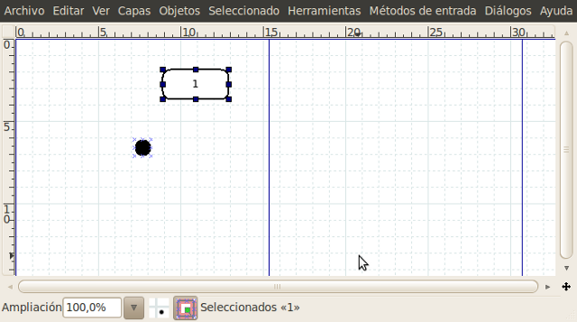
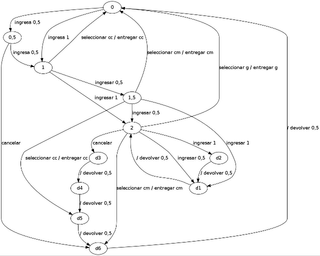

Diagramas de Estado UML con Software Libre?
Para terminar una materia de la maestría que cursé tuve que entregar unos trabajos prácticos, parte de esto son unos diagramas UML. El diagrama más común es el de Clases y hay herramientas que solo hacen eso. En esta oportunidad tengo que hacer algunos diagramas de estado y de actividades.
En el pasado no encontré buenas herramientas libres que permitan realizar modelado a la vez que no conviertan mi computadora en una carreta (si Eclipse, te estoy mirando).
Una búsqueda en el repositorio de paquetes de Ubuntu, descartando a mano los programas que llevan la sigla UML pero que son totalmente otra cosa (linka use mode linux), me dejó con estas opciones:
Umbrello: un clásico que está en las distribuciones de GNU/Linux desde que estoy en primer año.
Gaphor: no lo conozco, parece estar hecho en Python, por las dependencias.
DIA: también un viejo conocido, no específico para UML pero puedo tener un kit de gráficos que me sorprenda.
Umbrello

ñllllllll
lllllllll
{kind=link}
lllllll
{kind=link}
lllllll
{kind=link}
{kind=link}
En la vista lógica permite crear diagramas de:
Clase
Secuencia
Colaboracion
Estado
Actividad
Comentarios
Comments powered by Disqus